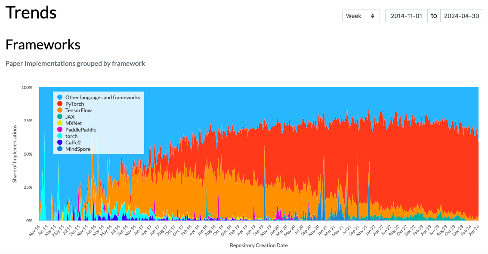
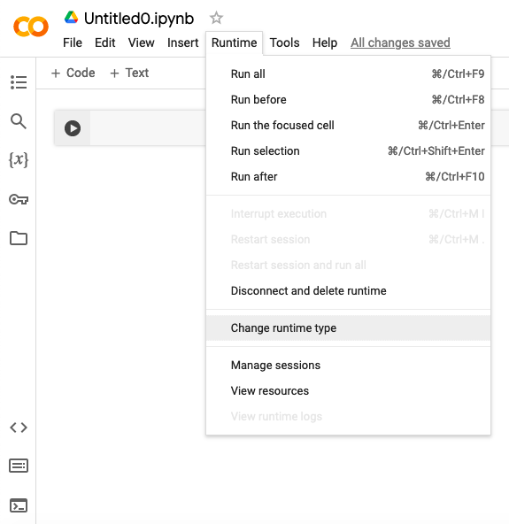
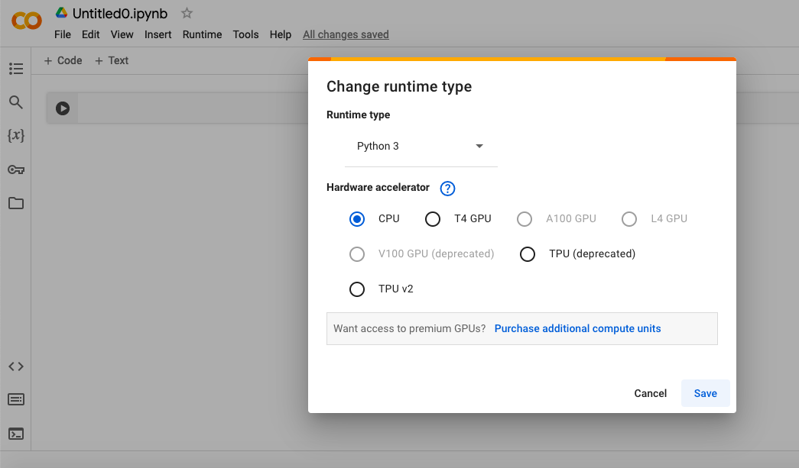
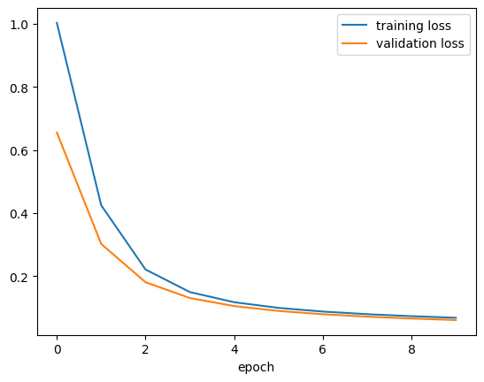
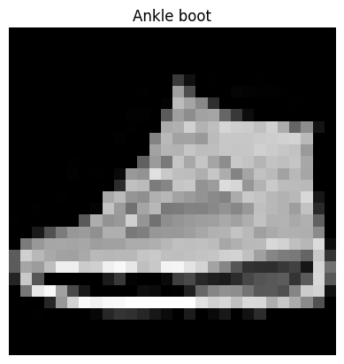
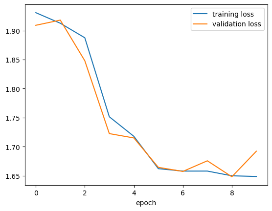
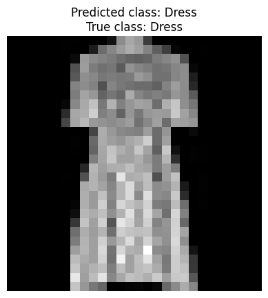

pip install torch torchvisionModul 9 Praktikum Sains Data: Pengantar PyTorch
Kembali ke Sains Data
Ini adalah pertemuan terakhir praktikum Sains Data tahun ini.
Di dua pertemuan sebelumnya, kita sudah membahas tentang neural network dan deep learning dengan TensorFlow dan Keras. Dari segi materi mata kuliah Sains Data, sebenarnya kita sudah selesai.
Namun, di awal Modul 7, telah disebutkan bahwa ada dua framework utama yang umum digunakan untuk deep learning di Python, yaitu TensorFlow (dengan Keras) dan PyTorch.
Agar wawasan kita lebih luas dan tidak terbatas satu framework saja, tidak ada salahnya kita coba mempelajari PyTorch juga :)
Lagipula, untuk riset/penelitian di dunia deep learning, saat ini PyTorch jauh lebih sering digunakan dibandingkan TensorFlow:

Gambar tren November 2014 hingga April 2024: dari semua implementasi atau kode yang telah dibuat untuk paper deep learning, berapa persen menggunakan framework tertentu. Pada April 2024, persentase PyTorch lebih dari 50%, sedangkan persentase TensorFlow kurang dari 10%.
Kalian bisa explore di link berikut: https://paperswithcode.com/trends
Apabila sewaktu-waktu kalian ingin menjalani skripsi atau semacamnya di dunia deep learning, atau setidaknya ingin membaca riset terbaru, kami harap wawasan tentang PyTorch ini bermanfaat.
Tentang urutan materi
Kami sengaja mengajarkan TensorFlow dan Keras terlebih dahulu, baru mengajarkan PyTorch, karena penyusunan model di PyTorch mirip dengan penggunaan subclassing API di Keras.
Sebelum kita mulai, instal terlebih dahulu PyTorch, dengan menginstal torch dan torchvision
torchadalah PyTorch.torchvisionmenyediakan fitur-fitur yang membantu ketika berurusan dengan gambar, bahkan seperti sudah menjadi bagian yang tidak terpisahkan daritorch.Sebenarnya ada juga
torchaudioyang membantu ketika berurusan dengan data suara. Boleh saja kalian instal juga:pip install torch torchvision torchaudio
Terkait penginstalan PyTorch, kalian bisa membaca lebih lanjut di sini: https://pytorch.org/get-started/locally/
Kalau sudah instal, jangan lupa import:
import torch, torchvisionKita bisa lihat versinya (mungkin di kalian akan lebih baru):
print(torch.__version__)2.1.0print(torchvision.__version__)0.16.0Jangan lupa import juga library yang biasa kita gunakan:
import numpy as np
import pandas as pd
import matplotlib.pyplot as pltMengenal PyTorch
CPU, GPU, dan device-agnostic code
Tiap komputer bisa memiliki kekuatan yang berbeda, termasuk ada/tiadanya komponen yang bernama GPU.
Tiap komputer pasti punya yang namanya CPU atau Central Processing Unit, yang biasanya menjadi pusat segala komputasi di komputer itu, sesuai namanya.
Namun, untuk perhitungan dengan matriks, tensor atau semacamnya, GPU atau Graphics Processing Unit lebih cepat. Perhitungan seperti itu biasa dilakukan untuk tampilan atau graphics ketika sedang bermain game, dan juga biasa dilakukan ketika berurusan dengan neural network.
Sehingga, daripada menggunakan CPU, ada baiknya menggunakan GPU, kalau ada.
Di Google Colaboratory, di menu Runtime > Change runtime type, di bagian hardware accelerator, kalian bisa mengubah setting, apakah ingin menggunakan CPU atau GPU. (Bahkan, ada juga TPU atau tensor processing unit yang sepertinya lebih dikhususkan lagi untuk komputasi dengan tensor.)


Apapun yang tersedia, tiap kali kita ingin menggunakan PyTorch, sebaiknya kita beritahu, mana yang ingin kita gunakan. Agar tidak berantakan, caranya bisa dengan kode berikut:
# Setup device-agnostic code
if torch.cuda.is_available():
device = "cuda" # NVIDIA GPU
elif torch.backends.mps.is_available():
device = "mps" # Apple GPU
else:
device = "cpu" # Defaults to CPU if NVIDIA GPU/Apple GPU aren't available
print(f"Using device: {device}")Using device: cudaSumber kode: https://www.learnpytorch.io/pytorch_cheatsheet/#device-agnostic-code-using-pytorch-on-cpu-gpu-or-mps
Output nya akan sesuai dengan pilihan terbaik yang ada, antara CPU atau GPU.
Kode di atas sebenarnya hanya menyimpan pilihan tersebut sebagai string ke dalam variabel device. Namun, variabel ini nantinya akan digunakan selama berurusan dengan PyTorch.
Sehingga, apabila kita ingin ganti dari CPU ke GPU atau sebaliknya, kita tinggal mengubah isi variabel device ini (misalnya menggunakan kode di atas), tidak perlu mengubah kode PyTorch yang sudah kita buat.
Dengan demikian, kode PyTorch yang sudah kita buat menjadi tidak tergantung device yang digunakan (apakah CPU atau GPU), atau disebut device-agnostic.
Tensor
Seperti di TensorFlow, di PyTorch juga ada tensor. Cara membuatnya adalah dengan torch.tensor
Contohnya, skalar:
tensor0 = torch.tensor(1.5)print(tensor0)tensor(1.5000)print(type(tensor0))<class 'torch.Tensor'>Kita bisa melihat dimensinya (rank/dimensi tensor) melalui .ndim
print(tensor0.ndim)0Tipe datanya berupa torch.tensor tapi kita bisa memperoleh nilai skalarnya dengan .item()
tensor0.item()1.5type(tensor0.item())floatContoh lain, array/vektor:
tensor1 = torch.tensor([2.31, 4.567, 8.9])print(tensor1)tensor([2.3100, 4.5670, 8.9000])print(tensor1.ndim)1Selain dimensi tensor, ada juga .shape yang di sini melambangkan ukuran array/vektor, seperti .shape di numpy
print(tensor1.shape)torch.Size([3])Nilai suatu elemen di tensor juga bisa diubah:
tensor1[0] = 52.5print(tensor1)tensor([52.5000, 4.5670, 8.9000])Ada juga tipe data:
print(tensor1.dtype)torch.float32Seperti tensor di TensorFlow, tensor di PyTorch juga biasanya menggunakan bilangan float yang 32-bit daripada 64-bit.
Contoh lagi, matriks:
mat1 = torch.tensor([
[1, 2.718, 3.14],
[4, 5, 6.28]
])print(mat1)tensor([[1.0000, 2.7180, 3.1400],
[4.0000, 5.0000, 6.2800]])print(mat1.ndim)2print(mat1.shape)torch.Size([2, 3])Kita bisa buat matriks kedua, lalu mengalikannya dengan perkalian matriks menggunakan torch.matmul
mat2 = torch.tensor([
[9, 8],
[7, 6],
[5, 4.3]
])print(mat2.ndim)
print(mat2.shape)
print(mat2.dtype)2
torch.Size([3, 2])
torch.float32mat3 = torch.matmul(mat1, mat2)print(mat3)tensor([[ 43.7260, 37.8100],
[102.4000, 89.0040]])Matriks juga bisa ditranspos dengan .T
mat4 = mat3.T
print(mat4)tensor([[ 43.7260, 102.4000],
[ 37.8100, 89.0040]])Konversi dari/ke numpy
Kita bisa mengonversi tensor PyTorch menjadi array numpy dan sebaliknya:
.numpy()untuk mengubah suatu tensor PyTorch menjadi array numpytorch.from_numpy(...)untuk mengubah suatu array numpy menjadi tensor PyTorch
arr5 = mat4.numpy()
print(arr5)
print(type(arr5))
print(arr5.dtype)[[ 43.725998 102.4 ]
[ 37.809998 89.004 ]]
<class 'numpy.ndarray'>
float32mat6 = torch.from_numpy(arr5)
print(mat6)
print(type(mat6))
print(mat6.dtype)tensor([[ 43.7260, 102.4000],
[ 37.8100, 89.0040]])
<class 'torch.Tensor'>
torch.float32ones, zeros, rand, randn
Kita bisa membuat tensor berisi satu semua, atau nol semua, atau nilai random, dengan ukuran size yang bisa kita tentukan
x = torch.ones(size = (3,4))
print(x)tensor([[1., 1., 1., 1.],
[1., 1., 1., 1.],
[1., 1., 1., 1.]])x = torch.zeros(size = (3,4))
print(x)tensor([[0., 0., 0., 0.],
[0., 0., 0., 0.],
[0., 0., 0., 0.]])x = torch.rand(size = (3,4))
print(x)tensor([[0.0698, 0.2004, 0.3279, 0.2525],
[0.2461, 0.4263, 0.4870, 0.4371],
[0.9545, 0.7487, 0.3990, 0.0412]])torch.rand memilih nilai secara random dari distribusi uniform pada interval \([0,1)\)
Untuk memilih nilai secara random dari distribusi normal (dengan \(\mu = 0\) dan \(\sigma = 1\)), gunakan torch.randn
x = torch.randn(size = (3,4))
print(x)tensor([[ 1.5820, -0.1806, 0.1820, -0.6891],
[ 1.2161, -0.5755, -0.5172, -0.7454],
[ 0.3047, -0.5932, -0.3343, -1.1461]])Operasi tensor seperti numpy
Secara umum, operasi tensor di PyTorch memang mirip dengan array di numpy, sebagaimana operasi tensor di TensorFlow juga mirip dengan array di numpy.
a = 4 * torch.ones((2, 2))
print(a)tensor([[4., 4.],
[4., 4.]])b = torch.square(a)
print(b)tensor([[16., 16.],
[16., 16.]])c = torch.sqrt(a)
print(c)tensor([[2., 2.],
[2., 2.]])d = b + c
print(d)tensor([[18., 18.],
[18., 18.]])# perkalian matriks
e = torch.matmul(a, c)
print(e)tensor([[16., 16.],
[16., 16.]])# perkalian per elemen
e *= d
print(e)tensor([[288., 288.],
[288., 288.]])# penjumlahan per elemen
f = e + 2
print(f)tensor([[290., 290.],
[290., 290.]])Autograd dengan .backward()
Sebagaimana ada automatic differentiation atau autodiff di TensorFlow, ada juga autograd di PyTorch. Namun, syntax nya cukup berbeda.
Caranya, inputnya kita jadikan tensor dengan parameter requires_grad=True, lalu kita operasikan (misal dengan fungsi f) dan menghasilkan tensor baru, lalu di tensor baru ini kita panggil .backward() agar turunan f dihitung dan disimpan di variabel input .grad
Contohnya, turunan \(x^3\) terhadap \(x\) di \(x=4\) adalah \(3(4)^2 = 48\).
# siapkan input, dengan requires_grad=True
x = torch.tensor(4.0, requires_grad=True)
# hitung fungsi F
F = x**3
# jalankan perhitungan turunan F (terhadap input)
F.backward()
# tampilkan turunan yang tersimpan di input .grad
print(x.grad)tensor(48.)Nama method nya adalah .backward() dan memang digunakan di backward pass (akan kita lihat nanti).
Contoh lain, turunan \(3x^3 - y^2\) terhadap \(x\) dengan \(x=2\) adalah \(9(2)^2 = 36\), dan turunannya terhadap \(y\) dengan \(y=6\) adalah \(-2(6) = -12\)
x = torch.tensor(2.0, requires_grad=True)
y = torch.tensor(6.0, requires_grad=True)
F = 3 * x**3 - y**2
F.backward()
print(x.grad)
print(y.grad)tensor(36.)
tensor(-12.)Klasifikasi biner dengan perceptron
Persiapan data, TensorData, DataLoader
Untuk model pertama kita, mari kita coba buat kembali model perceptron untuk klasifikasi biner yang pernah kita buat di Modul 7, dengan dataset titik_negatif_positif.csv yang sama, bisa kalian download dari GitHub Pages ini: titik_negatif_positif.csv
Kita buka datasetnya, jangan lupa dengan dtype="float32" karena itulah tipe data yang biasa digunakan oleh PyTorch, seperti TensorFlow:
titik_df = pd.read_csv("./titik_negatif_positif.csv", dtype="float32")titik_df| x | y | kelas | |
|---|---|---|---|
| 0 | 1.173375 | 4.570637 | 0.0 |
| 1 | 0.195961 | 3.504604 | 0.0 |
| 2 | 0.121400 | 2.163783 | 0.0 |
| 3 | -1.170182 | 3.882771 | 0.0 |
| 4 | -0.424403 | 0.534641 | 0.0 |
| ... | ... | ... | ... |
| 1995 | 2.423160 | -0.337196 | 1.0 |
| 1996 | 1.949836 | -0.627813 | 1.0 |
| 1997 | 2.109928 | -0.382492 | 1.0 |
| 1998 | 4.178664 | 0.486168 | 1.0 |
| 1999 | 2.326363 | 1.228249 | 1.0 |
2000 rows × 3 columns
Memisahkan antara inputs (prediktor) dan targets (variabel target):
titik_inputs_df = titik_df.drop(columns=["kelas"])
titik_targets_df = titik_df[["kelas"]]titik_inputs_df| x | y | |
|---|---|---|
| 0 | 1.173375 | 4.570637 |
| 1 | 0.195961 | 3.504604 |
| 2 | 0.121400 | 2.163783 |
| 3 | -1.170182 | 3.882771 |
| 4 | -0.424403 | 0.534641 |
| ... | ... | ... |
| 1995 | 2.423160 | -0.337196 |
| 1996 | 1.949836 | -0.627813 |
| 1997 | 2.109928 | -0.382492 |
| 1998 | 4.178664 | 0.486168 |
| 1999 | 2.326363 | 1.228249 |
2000 rows × 2 columns
titik_targets_df| kelas | |
|---|---|
| 0 | 0.0 |
| 1 | 0.0 |
| 2 | 0.0 |
| 3 | 0.0 |
| 4 | 0.0 |
| ... | ... |
| 1995 | 1.0 |
| 1996 | 1.0 |
| 1997 | 1.0 |
| 1998 | 1.0 |
| 1999 | 1.0 |
2000 rows × 1 columns
Mengubahnya menjadi array numpy:
titik_inputs_arr = titik_inputs_df.to_numpy()
titik_targets_arr = titik_targets_df.to_numpy()Kemudian mengubahnya menjadi tensor PyTorch:
titik_inputs_tensor = torch.from_numpy(titik_inputs_arr)
titik_targets_tensor = torch.from_numpy(titik_targets_arr)Tujuan mengubah dari DataFrame menjadi tensor, tentunya supaya bisa diproses dengan PyTorch.
Kita bisa periksa, bentuknya sesuai:
print(titik_inputs_tensor)tensor([[ 1.1734, 4.5706],
[ 0.1960, 3.5046],
[ 0.1214, 2.1638],
...,
[ 2.1099, -0.3825],
[ 4.1787, 0.4862],
[ 2.3264, 1.2282]])print(titik_targets_tensor)tensor([[0.],
[0.],
[0.],
...,
[1.],
[1.],
[1.]])Kemudian, kita bisa melakukan train-validation-test split, misalnya dengan rasio 80:10:10
from sklearn.model_selection import train_test_split# data utuh menjadi data train 80% dan data "test" 20%
titik_X_train, titik_X_test, titik_y_train, titik_y_test = train_test_split(
titik_inputs_tensor, titik_targets_tensor, test_size=0.2, random_state=42
)
# data "test" dibagi dua, menjadi data validation dan data test sesungguhnya
titik_X_val, titik_X_test, titik_y_val, titik_y_test = train_test_split(
titik_X_test, titik_y_test, test_size=0.5, random_state=42
)Kita bisa periksa ukurannya, rasionya sudah sesuai yang kita tetapkan:
print(titik_X_train.shape)
print(titik_X_val.shape)
print(titik_X_test.shape)torch.Size([1600, 2])
torch.Size([200, 2])
torch.Size([200, 2])Sebelum dataset kita benar-benar siap untuk diproses dengan PyTorch, ada dua hal yang perlu kita lakukan:
mengubahnya menjadi objek
DatasetdenganTensorDatasetDatasetdi sini adalah format dataset umum yang dikenal oleh PyTorch.mengubah objek
Datasetmenjadi objekDataLoaderDataLoadermembuat objekDatasetmenjadi “iterable” yaitu bisa diiterasikan dengan for loop, agar bisa digunakan dalam proses training maupun testing.
Baik TensorDataset maupun DataLoader bisa kita import dari torch.utils.data
from torch.utils.data import TensorDataset, DataLoaderMasing-masing dari data train, data validation, dan data test bisa kita ubah menjadi objek Dataset dengan menentukan mana prediktor dan mana target:
titik_train_dataset = TensorDataset(titik_X_train, titik_y_train)
titik_val_dataset = TensorDataset(titik_X_val, titik_y_val)
titik_test_dataset = TensorDataset(titik_X_test, titik_y_test)Kemudian, masing-masing bisa kita ubah menjadi DataLoader, sekasligus menentukan batch size, dan juga menentukan apakah perlu ada shuffling di tiap epoch (biasanya dilakukan di data train untuk mengurangi overfitting):
titik_train_dataloader = DataLoader(titik_train_dataset, batch_size=32, shuffle=True)
titik_val_dataloader = DataLoader(titik_val_dataset, batch_size=32, shuffle=False)
titik_test_dataloader = DataLoader(titik_test_dataset, batch_size=32, shuffle=False)Menyusun model
Ingat bahwa perceptron yang ingin kita susun hanya terdiri dari
input layer dengan dua neuron,
tidak ada hidden layer,
output layer dengan satu neuron dan fungsi aktivasi sigmoid
Sehingga matriks bobot yang sesuai berukuran \(2 \times 1\), dan vektor bias yang sesuai berukuran \(1 \times 1\).
Di PyTorch, tiap model berupa class dengan ketentuan:
meng-inherit dari
torch.nn.Module(yaitu base class untuk semua model PyTorch)baris pertama di constructor
__init__adalahsuper().__init__()harus mendefinisikan
forward()untuk forward passkomponen/variabel/atribut/parameter yang diperlukan biasanya didefinisikan di constructor
Catatan: parameter biasa didefinisikan dengan
torch.nn.Parameterdaripadatorch.tensor
Ini cukup mirip dengan subclassing API di Keras, yang meng-inherit dari keras.Model dan harus mendefinisikan call() untuk forward pass.
Mari kita susun perceptron kita, yang memiliki matriks bobot, vektor bias, dan fungsi aktivasi sigmoid:
class MyPerceptron(torch.nn.Module):
def __init__(self):
super().__init__()
self.weights = torch.nn.Parameter(
torch.randn(size = (2, 1), dtype = torch.float32),
requires_grad=True # agar autgrad aktif
)
self.bias = torch.nn.Parameter(
torch.randn(size = (1,), dtype = torch.float32),
requires_grad=True
)
def forward(self, x):
return torch.sigmoid(
torch.matmul(x, self.weights) + self.bias
)Kita bisa buat suatu instance atau objek dari class di atas:
pisah_titik = MyPerceptron()Ini adalah model yang siap di-train. Sebelum training, kita bisa memeriksa parameter model (saat ini masih random sesuai torch.randn):
list(pisah_titik.parameters())[Parameter containing:
tensor([[-0.8412],
[-1.1300]], requires_grad=True),
Parameter containing:
tensor([-0.0640], requires_grad=True)]Mirip, ada juga yang namanya .state_dict()
pisah_titik.state_dict()OrderedDict([('weights',
tensor([[-0.8412],
[-1.1300]])),
('bias', tensor([-0.0640]))])Menyiapkan hyperparameter
Untuk klasifikasi, loss function yang biasa digunakan adalah crossentropy loss, atau mungkin lebih spesifiknya binary crossentropy loss, yang disebut torch.nn.BCELoss di PyTorch. Kita bisa menyiapkannya sebagai objek.
titik_loss_fn = torch.nn.BCELoss()Serupa, optimizer juga disiapkan sebagai objek, misalnya torch.optim.SGD untuk SGD (stochastic gradient descent):
titik_opt = torch.optim.SGD(params=pisah_titik.parameters(), # merujuk ke parameter model
lr=0.01) # learning rateTraining loop
Mungkin agak mengejutkan: di PyTorch, kita dibebaskan untuk membuat training loop sendiri. Artinya, tidak ada fungsi .fit() yang tinggal kita panggil; kita perlu menyusun for loop sendiri, seperti di Modul 7 :)
Ingat kembali, tiap iterasi (yaitu per batch) di proses training melibatkan:
Forward pass: menghitung nilai output (hasil prediksi) dari input (batch).
Menghitung loss antara hasil prediksi dan nilai sebenarnya
Backpropagation: menghitung gradien dari loss terhadap tiap parameter
Update optimizer: memperbarui nilai parameter berdasarkan gradien dari loss, menggunakan rumus atau optimizer yang dipilih
Ingat juga, selain training, ada juga yang namanya validation (atau terkadang disebut testing di beberapa sumber). Tahap validation ini menguji model di akhir tiap epoch, setelah semua batch melalui proses training. Langkahnya terdiri dari:
Forward pass
Menghitung loss dan/atau accuracy antara hasil prediksi dan nilai sebenarnya
Perhatikan bahwa validation juga bisa dilakukan per batch, sehingga kedua langkah di atas dilakukan per batch. Kalau begitu, nilai akhir untuk loss dan/atau accuracy menjadi rata-rata dari nilainya di tiap batch.
Penjelasan di atas menjadi kode PyTorch sebagai berikut:
epochs = 10
train_loss_list = []
val_loss_list = []
# untuk tiap epoch,
for epoch in range(epochs):
# siapkan model untuk tahap training
pisah_titik.to(device)
pisah_titik.train()
sum_train_loss = 0
# untuk tiap batch,
for X, y in titik_train_dataloader:
X = X.to(device)
y = y.to(device)
# Forward pass
y_pred = pisah_titik(X)
# Hitung loss
loss = titik_loss_fn(y_pred, y)
sum_train_loss += loss
# "Optimizer zero grad": nolkan dulu hasil hitung gradien
titik_opt.zero_grad()
# Backpropagation
loss.backward()
# Update optimizer, juga disebut "optimizer step"
titik_opt.step()
# hitung rata-rata train loss berdasarkan banyaknya batch
avg_train_loss = sum_train_loss / len(titik_train_dataloader)
# simpan train loss
train_loss_list.append(avg_train_loss)
# siapkan model untuk tahap validaion
pisah_titik.to(device)
pisah_titik.eval()
sum_val_loss = 0
# selalu digunakan ketika hendak testing
with torch.inference_mode():
# untuk tiap batch,
for X, y in titik_val_dataloader:
X = X.to(device)
y = y.to(device)
# Forward pass
y_pred = pisah_titik(X)
# Hitung loss
sum_val_loss += titik_loss_fn(y_pred, y)
# hitung rata-rata val loss berdasarkan banyaknya batch
avg_val_loss = sum_val_loss / len(titik_val_dataloader)
# simpan val loss
val_loss_list.append(avg_val_loss)
# tampilkan train loss dan val loss untuk epoch ini
print(f"Epoch: {epoch} | avg train loss: {avg_train_loss} | avg val loss: {avg_val_loss}")Epoch: 0 | avg train loss: 1.0023550987243652 | avg val loss: 0.6549612879753113
Epoch: 1 | avg train loss: 0.424757719039917 | avg val loss: 0.3022421300411224
Epoch: 2 | avg train loss: 0.2212503552436828 | avg val loss: 0.1808699667453766
Epoch: 3 | avg train loss: 0.1497089713811874 | avg val loss: 0.1308697611093521
Epoch: 4 | avg train loss: 0.1175468564033508 | avg val loss: 0.1053687334060669
Epoch: 5 | avg train loss: 0.0995666906237602 | avg val loss: 0.0898655503988266
Epoch: 6 | avg train loss: 0.0879358351230621 | avg val loss: 0.0794256925582885
Epoch: 7 | avg train loss: 0.0796592533588409 | avg val loss: 0.0717914551496505
Epoch: 8 | avg train loss: 0.0733261257410049 | avg val loss: 0.0658656656742096
Epoch: 9 | avg train loss: 0.0682612806558609 | avg val loss: 0.061109509319067Perhatikan bahwa hasil loss di tiap epoch sudah kita simpan ke dalam list.
print(train_loss_list)
print(val_loss_list)[tensor(1.0024, grad_fn=<DivBackward0>), tensor(0.4248, grad_fn=<DivBackward0>), tensor(0.2213, grad_fn=<DivBackward0>), tensor(0.1497, grad_fn=<DivBackward0>), tensor(0.1175, grad_fn=<DivBackward0>), tensor(0.0996, grad_fn=<DivBackward0>), tensor(0.0879, grad_fn=<DivBackward0>), tensor(0.0797, grad_fn=<DivBackward0>), tensor(0.0733, grad_fn=<DivBackward0>), tensor(0.0683, grad_fn=<DivBackward0>)]
[tensor(0.6550), tensor(0.3022), tensor(0.1809), tensor(0.1309), tensor(0.1054), tensor(0.0899), tensor(0.0794), tensor(0.0718), tensor(0.0659), tensor(0.0611)]Maka, kita bisa ubah jadi DataFrame lalu menyimpannya sebagai CSV:
titik_loss_df = pd.DataFrame(
[
[loss.item() for loss in train_loss_list],
[loss.item() for loss in val_loss_list]
],
).transpose().rename(columns={0: "train_loss", 1: "val_loss"})titik_loss_df| train_loss | val_loss | |
|---|---|---|
| 0 | 1.002355 | 0.654961 |
| 1 | 0.424758 | 0.302242 |
| 2 | 0.221250 | 0.180870 |
| 3 | 0.149709 | 0.130870 |
| 4 | 0.117547 | 0.105369 |
| 5 | 0.099567 | 0.089866 |
| 6 | 0.087936 | 0.079426 |
| 7 | 0.079659 | 0.071791 |
| 8 | 0.073326 | 0.065866 |
| 9 | 0.068261 | 0.061110 |
titik_loss_df.to_csv("./pytorch_titik_loss_df.csv", index=False)Kalau mau menyamakan dengan modul, kalian bisa download melalui GitHub Pages ini: pytorch_titik_loss_df.csv
Kita bisa import kembali:
pytorch_titik_loss_df = pd.read_csv("./pytorch_titik_loss_df.csv")Lalu kita bisa plot:
plt.plot(pytorch_titik_loss_df["train_loss"], label = "training loss")
plt.plot(pytorch_titik_loss_df["val_loss"], label = "validation loss")
plt.xlabel("epoch")
plt.legend()
plt.show()
Prediksi
Menyimpan parameter model (saja)
Ingat kembali, kita bisa melihat parameter model dengan .state_dict()
pisah_titik.state_dict()OrderedDict([('weights',
tensor([[ 0.9372],
[-1.2340]])),
('bias', tensor([0.3439]))])Kita bisa menyimpan parameter model ke dalam file berakhiran .pth menggunakan torch.save
torch.save(pisah_titik.state_dict(), "./pisah_titik_state.pth")Apabila ingin load kembali, kita perlu membuat instance terlebih dahulu…
pisah_titik2 = MyPerceptron()Barulah kita panggil .load_state_dict(torch.load(PATH)) seperti berikut:
pisah_titik2.load_state_dict(torch.load("./pisah_titik_state.pth"))<All keys matched successfully>Parameternya akan sama:
pisah_titik2.state_dict()OrderedDict([('weights',
tensor([[ 0.9372],
[-1.2340]])),
('bias', tensor([0.3439]))])torch.nn.Linear dan torch.nn.Sequential
class MyPerceptron_v2(torch.nn.Module):
def __init__(self):
super().__init__()
# satu dense layer dengan fungsi aktivasi linier
self.linear_layer = torch.nn.Linear(in_features=2, out_features=1)
# fungsi aktivasi sigmoid
self.sigmoid = torch.nn.Sigmoid()
def forward(self, x):
x = self.linear_layer(x)
x = self.sigmoid(x)
return xclass MyPerceptron_v3(torch.nn.Module):
def __init__(self):
super().__init__()
# perhatikan: inputnya bukan berupa list, langsung saja tiap layer
self.layer = torch.nn.Sequential(
torch.nn.Linear(in_features=2, out_features=1),
torch.nn.Sigmoid()
)
def forward(self, x):
x = self.layer(x)
return xFungsi train step dan val step
Training loop kita terdiri dari dua bagian utama, yaitu tahap training dan tahap validation. Kita bisa menyusun training loop yang telah kita buat dengan lebih rapi, dengan memasukkan tiap tahap ke dalam fungsi yang nantinya tinggal dipanggil. Modifikasi yang dilakukan:
pisah_titikmenjadimodeltitik_train_dataloadermenjaditrain_dataloadertitik_val_dataloadermenjadival_dataloadertitik_loss_fnmenjadiloss_fntitik_optmenjadioptimizer
def train_step(model, train_dataloader, loss_fn, optimizer, device=device):
# siapkan model untuk tahap training
model.to(device)
model.train()
sum_train_loss = 0
# untuk tiap batch,
for X, y in train_dataloader:
X = X.to(device)
y = y.to(device)
# Forward pass
y_pred = model(X)
# Hitung loss
loss = loss_fn(y_pred, y)
sum_train_loss += loss
# "Optimizer zero grad": nolkan dulu hasil hitung gradien
optimizer.zero_grad()
# Backpropagation
loss.backward()
# Update optimizer, juga disebut "optimizer step"
optimizer.step()
# hitung rata-rata train loss berdasarkan banyaknya batch
avg_train_loss = sum_train_loss / len(train_dataloader)
# sedikit modifikasi: return train loss
return avg_train_lossdef val_step(model, val_dataloader, loss_fn, device=device):
# siapkan model untuk tahap validaion
model.to(device)
model.eval()
sum_val_loss = 0
# selalu digunakan ketika hendak testing
with torch.inference_mode():
# untuk tiap batch,
for X, y in val_dataloader:
X = X.to(device)
y = y.to(device)
# Forward pass
y_pred = model(X)
# Hitung loss
sum_val_loss += loss_fn(y_pred, y)
# hitung rata-rata val loss berdasarkan banyaknya batch
avg_val_loss = sum_val_loss / len(val_dataloader)
# sedikit modifikasi: return val loss
return avg_val_lossSetelah mendefinisikan kedua fungsi di atas, training loop menjadi lebih sederhana:
epochs = 10
train_loss_list = []
val_loss_list = []
# untuk tiap epoch,
for epoch in range(epochs):
# training step
avg_train_loss = train_step(
model = pisah_titik,
train_dataloader = titik_train_dataloader,
loss_fn = titik_loss_fn,
optimizer = titik_opt,
device = device
)
train_loss_list.append(avg_train_loss)
# validation step
avg_val_loss = val_step(
model = pisah_titik,
val_dataloader = titik_val_dataloader,
loss_fn = titik_loss_fn,
device = device
)
val_loss_list.append(avg_val_loss)
# tampilkan train loss dan val loss untuk epoch ini
print(f"Epoch: {epoch} | avg train loss: {avg_train_loss} | avg val loss: {avg_val_loss}")Bahkan, training loop secara keseluruhan bisa kita jadikan fungsi juga.
def training_loop(
model, train_dataloader, val_dataloader,
loss_fn, optimizer, epochs, device = device
):
train_loss_list = []
val_loss_list = []
# untuk tiap epoch,
for epoch in range(epochs):
# training step
avg_train_loss = train_step(
model, train_dataloader,
loss_fn, optimizer, device=device
)
train_loss_list.append(avg_train_loss)
# validation step
avg_val_loss = val_step(
model, val_dataloader,
loss_fn, device=device
)
val_loss_list.append(avg_val_loss)
# tampilkan train loss dan val loss untuk epoch ini
print(f"Epoch: {epoch} | avg train loss: {avg_train_loss} | avg val loss: {avg_val_loss}")
# menyimpan kedua list ke dalam dictionary yang kemudian di-return
results_dict = {
"train_loss": [loss.item() for loss in train_loss_list],
"val_loss": [loss.item() for loss in val_loss_list]
}
return results_dictKlasifikasi Gambar
Sekarang kita akan mencoba melakukan klasifikasi gambar dengan dataset Fashion MNIST seperti di pertemuan sebelumnya.
Persiapan data
Langkah pertama adalah menyiapkan data, yaitu menyiapkan objek Dataset, yang kemudian diubah menjadi DataLoader. Untungnya, objek Dataset untuk Fashion MNIST sudah tersedia di torchvision.datasets.FashionMNIST sehingga tinggal kita download seperti berikut.
Perkiraan storage yang dibutuhkan: 90 MB
Apabila download di laptop kalian terlalu pelan, silakan gunakan Google Colaboratory saja, selesai kurang dari 30 detik
fashion_train = torchvision.datasets.FashionMNIST(
root = "./fashion_data", # folder tempat download
train = True, # data training
download = True, # karena belum ada
# agar file gambar otomatis diubah menjadi tensor
transform = torchvision.transforms.ToTensor()
)Downloading http://fashion-mnist.s3-website.eu-central-1.amazonaws.com/train-images-idx3-ubyte.gz
Downloading http://fashion-mnist.s3-website.eu-central-1.amazonaws.com/train-images-idx3-ubyte.gz to ./fashion_data/FashionMNIST/raw/train-images-idx3-ubyte.gz100%|██████████| 26421880/26421880 [00:06<00:00, 3856770.39it/s]Extracting ./fashion_data/FashionMNIST/raw/train-images-idx3-ubyte.gz to ./fashion_data/FashionMNIST/raw
Downloading http://fashion-mnist.s3-website.eu-central-1.amazonaws.com/train-labels-idx1-ubyte.gz
Downloading http://fashion-mnist.s3-website.eu-central-1.amazonaws.com/train-labels-idx1-ubyte.gz to ./fashion_data/FashionMNIST/raw/train-labels-idx1-ubyte.gz100%|██████████| 29515/29515 [00:00<00:00, 147617.02it/s]Extracting ./fashion_data/FashionMNIST/raw/train-labels-idx1-ubyte.gz to ./fashion_data/FashionMNIST/raw
Downloading http://fashion-mnist.s3-website.eu-central-1.amazonaws.com/t10k-images-idx3-ubyte.gz
Downloading http://fashion-mnist.s3-website.eu-central-1.amazonaws.com/t10k-images-idx3-ubyte.gz to ./fashion_data/FashionMNIST/raw/t10k-images-idx3-ubyte.gz100%|██████████| 4422102/4422102 [00:01<00:00, 2747505.87it/s]Extracting ./fashion_data/FashionMNIST/raw/t10k-images-idx3-ubyte.gz to ./fashion_data/FashionMNIST/raw
Downloading http://fashion-mnist.s3-website.eu-central-1.amazonaws.com/t10k-labels-idx1-ubyte.gz
Downloading http://fashion-mnist.s3-website.eu-central-1.amazonaws.com/t10k-labels-idx1-ubyte.gz to ./fashion_data/FashionMNIST/raw/t10k-labels-idx1-ubyte.gz100%|██████████| 5148/5148 [00:00<00:00, 5877048.72it/s]Extracting ./fashion_data/FashionMNIST/raw/t10k-labels-idx1-ubyte.gz to ./fashion_data/FashionMNIST/raw
fashion_val = torchvision.datasets.FashionMNIST(
root = "./fashion_data", # folder yang sama untuk tempat download
train = False, # bukan data training
download = True,
transform = torchvision.transforms.ToTensor()
)Banyaknya baris di data training dan data validation
print(len(fashion_train.data), len(fashion_train.targets))60000 60000print(len(fashion_val.data), len(fashion_val.targets))10000 10000Kelas-kelas:
nama_kelas = fashion_train.classes
print(nama_kelas)['T-shirt/top', 'Trouser', 'Pullover', 'Dress', 'Coat', 'Sandal', 'Shirt', 'Sneaker', 'Bag', 'Ankle boot']Kita bisa lihat salah satu gambarnya:
#@title Slider to look for some image examples {run: "auto"}
idx = 21402 #@param {type:"slider", min:0, max:49999, step:1}
image, label = fashion_train[idx]
plt.imshow(image.squeeze(), cmap='gray')
plt.title(nama_kelas[label])
plt.axis('OFF')
plt.show()
Sedikit berbeda dengan pertemuan sebelumnya, kali ini kita gunakan .squeeze() karena gambar yang diberikan berukuran 1 x 28 x 28 (yaitu dengan satu color channel: hitam-putih) daripada 28 x 28, sehingga perlu diubah menjadi 28 x 28.
Jangan lupa menyiapkan DataLoader
BATCH_SIZE = 32
fashion_train_dataloader = DataLoader(
fashion_train,
batch_size = BATCH_SIZE,
shuffle = True
)
fashion_val_dataloader = DataLoader(
fashion_val,
batch_size = BATCH_SIZE,
shuffle = False
)Menyusun model
class ModelFashionMNIST(torch.nn.Module):
def __init__(self):
super().__init__()
self.layer_stack = torch.nn.Sequential(
torch.nn.Flatten(),
torch.nn.Linear(in_features=784, out_features=15),
torch.nn.ReLU(),
torch.nn.Linear(in_features=15, out_features=10),
torch.nn.Softmax(dim=1)
)
def forward(self, x):
x = self.layer_stack(x)
return xfashion_model = ModelFashionMNIST()Menyiapkan hyperparameter
fashion_loss_fn = torch.nn.CrossEntropyLoss()
fashion_opt = torch.optim.Adam(params=fashion_model.parameters(),
lr=0.01)Training
fashion_results = training_loop(
fashion_model, fashion_train_dataloader, fashion_val_dataloader,
fashion_loss_fn, fashion_opt,
epochs = 10,
device = device
)Epoch: 0 | avg train loss: 1.9308573007583618 | avg val loss: 1.9090994596481323
Epoch: 1 | avg train loss: 1.9126436710357666 | avg val loss: 1.9180550575256348
Epoch: 2 | avg train loss: 1.8876198530197144 | avg val loss: 1.8480236530303955
Epoch: 3 | avg train loss: 1.7515285015106201 | avg val loss: 1.722522497177124
Epoch: 4 | avg train loss: 1.7178850173950195 | avg val loss: 1.715074062347412
Epoch: 5 | avg train loss: 1.6621224880218506 | avg val loss: 1.6644155979156494
Epoch: 6 | avg train loss: 1.6579434871673584 | avg val loss: 1.6573517322540283
Epoch: 7 | avg train loss: 1.6579766273498535 | avg val loss: 1.675686240196228
Epoch: 8 | avg train loss: 1.6498321294784546 | avg val loss: 1.6481648683547974
Epoch: 9 | avg train loss: 1.6487261056900024 | avg val loss: 1.692258358001709fashion_loss_df = pd.DataFrame(
[
[loss.item() for loss in fashion_results["train_loss"]],
[loss.item() for loss in fashion_results["val_loss"]]
],
).transpose().rename(columns={0: "train_loss", 1: "val_loss"})fashion_loss_df| train_loss | val_loss | |
|---|---|---|
| 0 | 1.930857 | 1.909099 |
| 1 | 1.912644 | 1.918055 |
| 2 | 1.887620 | 1.848024 |
| 3 | 1.751529 | 1.722522 |
| 4 | 1.717885 | 1.715074 |
| 5 | 1.662122 | 1.664416 |
| 6 | 1.657943 | 1.657352 |
| 7 | 1.657977 | 1.675686 |
| 8 | 1.649832 | 1.648165 |
| 9 | 1.648726 | 1.692258 |
fashion_loss_df.to_csv("./pytorch_fashion_loss_df.csv", index=False)Kalau mau menyamakan dengan modul, bisa download dari GitHub Pages ini: pytorch_fashion_loss_df.csv
pytorch_fashion_loss_df = pd.read_csv("./pytorch_fashion_loss_df.csv")pytorch_fashion_loss_df| train_loss | val_loss | |
|---|---|---|
| 0 | 1.930857 | 1.909099 |
| 1 | 1.912644 | 1.918055 |
| 2 | 1.887620 | 1.848024 |
| 3 | 1.751529 | 1.722522 |
| 4 | 1.717885 | 1.715074 |
| 5 | 1.662122 | 1.664416 |
| 6 | 1.657943 | 1.657352 |
| 7 | 1.657977 | 1.675686 |
| 8 | 1.649832 | 1.648165 |
| 9 | 1.648726 | 1.692258 |
plt.plot(pytorch_fashion_loss_df["train_loss"], label = "training loss")
plt.plot(pytorch_fashion_loss_df["val_loss"], label = "validation loss")
plt.xlabel("epoch")
plt.legend()
plt.show()
Prediksi
fashion_val_list = list(fashion_val_dataloader)tes_batch_gambar, tes_batch_label = fashion_val_list[123]print(tes_batch_gambar.shape)torch.Size([32, 1, 28, 28])print(tes_batch_label.shape)torch.Size([32])tes_gambar = tes_batch_gambar[0, :, :, :].to(device)print(tes_gambar.shape)torch.Size([1, 28, 28])tes_label = tes_batch_label[0]print(tes_label)
print(nama_kelas[tes_label])tensor(3)
Dressy_pred = fashion_model(tes_gambar)print(y_pred)tensor([[4.4959e-07, 0.0000e+00, 0.0000e+00, 1.0000e+00, 0.0000e+00, 0.0000e+00,
0.0000e+00, 0.0000e+00, 0.0000e+00, 0.0000e+00]], device='cuda:0',
grad_fn=<SoftmaxBackward0>)print(torch.argmax(y_pred).item())3#@title Slider to look for some prediction examples {run: "auto"}
batch_idx = 123 #@param {type:"slider", min:0, max:9999, step:1}
pic_idx = 0 #@param {type:"slider", min:0, max:31, step:1}
batch_gambar, batch_label = fashion_val_list[batch_idx]
satu_gambar = batch_gambar[pic_idx].to(device)
label_true_idx = batch_label[pic_idx].item()
label_pred_idx = torch.argmax(fashion_model(satu_gambar)).item()
plt.imshow(satu_gambar.cpu().squeeze(), cmap='gray')
plt.title(
f"Predicted class: {nama_kelas[label_pred_idx]}\n" +
f"True class: {nama_kelas[label_true_idx]}"
)
plt.axis('OFF')
plt.show()
Menyimpan parameter model
torch.save(fashion_model.state_dict(), "./fashion_model_state.pth")Referensi
Internet
Sumber belajar PyTorch, deep learning, atau semacamnya, untuk belajar lebih lanjut
Buku Dive into Deep Learning (biasa disebut D2L), utamanya menggunakan PyTorch: https://d2l.ai/
Situs bernama “weights and biases” (wandb) menyediakan layanan pemantauan proses training: https://wandb.ai/site